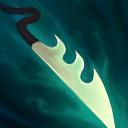
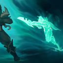

起手裝備
 幽魂之鐮
幽魂之鐮
保留幽夢、巨蛇、夜色、復活甲；幽夢降至2900利於遊走。鞋改愛歐尼亞線優先技能循環，巨蛇是否第二件視敵方護盾量調整。 五成裝為四件購買裝＋進化任務裝，鞋獨立；三級鞋按經濟補，不把外站附魔搬進本站。


五件成裝與鞋子分開列示；起手與核心是購買路線，不是額外佔用的成裝欄位。鞋子完成時機仍依對線壓力與回城金錢調整。


冰霜霸主與巨像勇氣補短暫進場承傷，超然配新鞋循環；不因幽夢降價改成只拼電刑的脆皮線。


保留閃現＋點燃配合控制集火；若改保排可在選角以虛弱替點燃，不在對局中換技能。
加點優先：Q > E > W
Q > E > W；主鉤副影分身暈眩，W一點服務接近與撤退。
脫離敵方視野時會回復近期受到的部分英雄傷害。派克無法從其他來源增加額外最大生命，額外生命會轉換為物理攻擊。

短按向前刺擊並傷害敵人；長按蓄力後擲出魚叉，把第一個命中的敵人拉向派克。是對線抓人與遊走先手的核心。
進入偽裝並提高跑速。靠近敵方英雄時會被察覺，適合繞過視野、快速遊走或脫戰回復灰色生命。

向前衝刺並留下鬼影；短暫延遲後鬼影回到派克身上，對路徑上的敵方英雄造成物理傷害與暈眩。
躍向十字區域，斬殺低於門檻的敵方英雄；成功斬殺後可短時間再次施放，並讓協助擊殺的隊友取得額外金錢。
生命加成轉為物攻，不能用好戰堆血跨門檻；R處決及重施以實際標記為準，敵方治療盾與位移會改變結果。
1技蓄力拉回 → 3技穿過目標 → 普攻補傷害 → 點燃壓制回復
鉤回後立刻用三技穿過目標，讓鬼影回程路徑覆蓋敵人。隊友距離不足時不要單獨深入。
3技向前衝刺 → 閃現調整鬼影終點 → 1技留住關鍵目標 → 普攻追擊 → 4技進入斬殺線後收尾
三技施放後可用閃現改變派克位置，延長或轉動鬼影回程線，命中原本躲開的敵人。
1技把殘血拉入範圍 → 3技暈眩限制位移 → 4技斬殺第一目標 → 2技加速追下一人 → 再次4技斬殺
先確認敵人出現斬殺標記再施放大絕。第一次成功斬殺後，利用潛行與跑速尋找下一個殘血目標。
血港淹禮會記錄近期英雄傷害，但派克必須離開敵方視野才會逐步回復。草叢、牆後與二技偽裝都是重要的重置工具。
短按是近距離刺擊，長按才會投出魚叉並拉回目標。近身時不必過度蓄力，遠距抓人則要利用草叢遮蔽起手。
汪洋死域命中低於門檻的英雄才會直接斬殺並刷新。沒有斬殺標記時，優先保留給後續收割。
利用草叢與視野差蓄力刺骨串叉。短按可快速刺擊，長按則把第一個命中的敵人拉向自己；命中後接溺流鬼影穿過目標，讓留下的鬼影回到派克身上時造成暈眩。換血受傷後先離開敵方視野，血港淹禮會把近期承受的部分傷害轉回生命，不必在低血量時立刻回城。
妖夢鬼刀 → 巨蛇鋒牙 → 夜色緣界 → 守護天使。保留幽夢、巨蛇、夜色、復活甲；幽夢降至2900利於遊走。鞋改愛歐尼亞線優先技能循環，巨蛇是否第二件視敵方護盾量調整。 黯霧之鐮由起手任務裝進化，保留占位；二級鞋依對線補，三級鞋不延後必要功能裝。
後期不要站在前排與坦克正面互換，應藏在側翼等待殘血目標。先用鉤子或三技打斷關鍵走位，再觀察斬殺標記；沒有標記時不要只為傷害跳入人群。若己方主力被切，可用三技穿過刺客形成暈眩，或用蓄力鉤把敵人拉離後排。
硬控坦輔能反制E深入，與達瑞文、路西恩等先壓血再R；不從隊友手上搶不在處決線的目標。
對局名單是機制與分路判斷，不代表固定勝率；需同時看雙方熟練度、兵線與陣容。
硬控坦輔能反制E深入，與達瑞文、路西恩等先壓血再R；不從隊友手上搶不在處決線的目標。
威脅名單是攻略與技能互動，實際需看雙方射手、技能冷卻和兵線；不代表台服勝率排名。
完整成裝為四件購買裝＋一件進化任務裝；鞋獨立。以下以本頁預設為基準，變體需重新檢查同名裝及功能缺口。
依陣容
觸發：護盾讓集火難以完成。
預設已包含巨蛇鋒牙，保留並依威脅提前，不再買第二件。
換掉原功能前先確認隊友能補足；替換不是第六件成裝。
依陣容
觸發：治療或吸血阻止擊殺。
守護天使 → 致死宣告
治療或吸血阻止擊殺。
致死提供物理穿透和重創；重創不與點燃相加。
換掉原功能前先確認隊友能補足；替換不是第六件成裝。
依陣容
觸發：主力輸出需第二次進場且隊友能守復活落點。
預設已包含守護天使，保留並依威脅提前，不再買第二件。
換掉原功能前先確認隊友能補足；替換不是第六件成裝。
依對線
觸發：敵方物理普攻是主要威脅，可犧牲部分輸出／技能加速。
愛歐尼亞之靴 → 鍍板鋼蓋
整條鞋線一起替換；先二級鞋，三級視經濟補。
不買第二雙鞋；主動裝仍占裝備格，不搬外站附魔。
血色法靴 → 裝甲戰靴
整條鞋線一起替換；先二級鞋，三級視經濟補。
不買第二雙鞋；主動裝仍占裝備格，不搬外站附魔。
韌性不能縮短擊飛等所有控制。
本頁校正版本：7.3b；校正日期：2026-10-15。
參考來源標示版本：7.3b
Tier、出裝、符文與對局是本站編輯建議，不是官方推薦或已驗證台服勝率。v118延續同日v117的逐路複核，針對來源缺口及數值衝突再核對；未宣稱所有技能已在手機內逐級實測。
評級理由：維持S：同路S，抓單與處決帶動經濟，但R門檻和重置不是無條件。
Riot 官方資料 ↗ · WildRiftFire 參考攻略 ↗
本頁延續2026/10/15 v117的輔助逐項複核，當前採用7.3b來源；來源只用作配置與機制參考，不等同官方推薦或台服即時勝率。
維持S：同路S，抓單與處決帶動經濟，但R門檻和重置不是無條件。